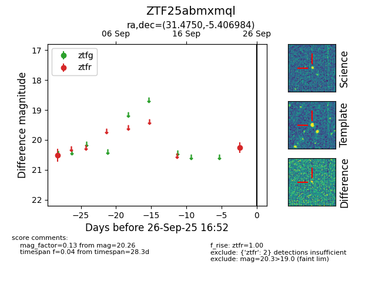

FINK: ZTF25abmxmql
Lasair: ZTF25abmxmql
ALeRCE: ZTF25abmxmql
ZTF25abmxmql (ztf,fink)
equatorial (ra, dec) = (31.4750,-5.40698)
galactic (l, b) = (165.4707,-61.96251)

last ztfr=20.26
2 ztfr detections